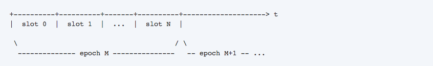
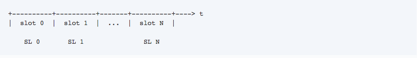
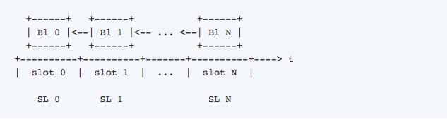
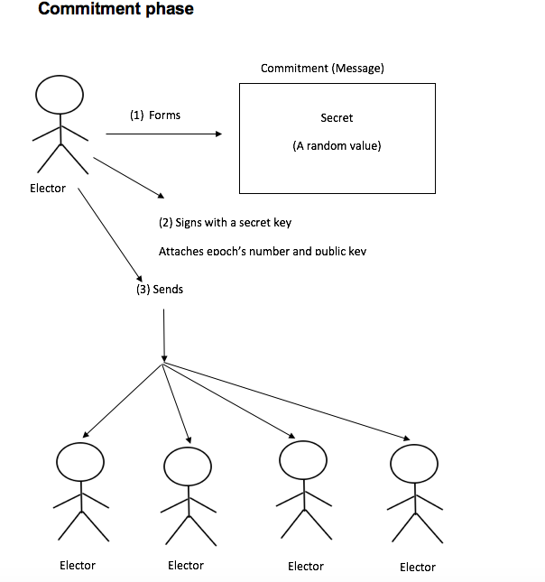
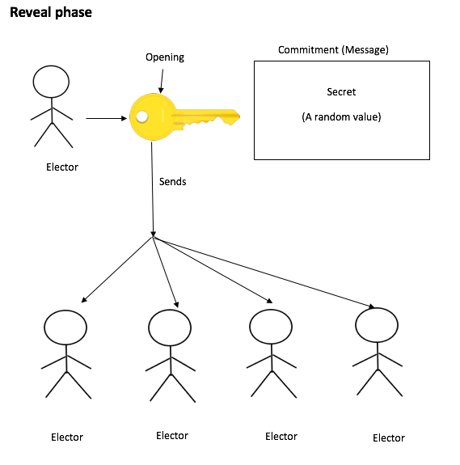
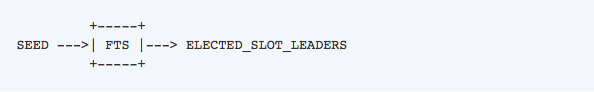

Cardano
Cryptocurrency: ADA
Blockchain: Cardano
Developers: IOHK
MOTIVATION FOR DEVELOPMENT
Cardano is one of the new cryptocurrencies which are gaining popularity. Like Ethereum Cardano also has smart contracts and decentralized applications. The creator of Cardano Charles Hoskinson is also a co-founder of Ethereum. Hoskinson came up with the idea of creation of Cardano to solve the issues with Ethereum.
Ethereum is slow and requires heavy memory.
Number of transactions per second are low.
These issues are very difficult to solve as the Ethereum network is already running and it’s not easy to make changes. Making changes to running Ethereum network can be compared with stopping a car in the middle of the road. Therefore, to solve these issues a new Blockchain was developed named as Cardano
CARDANO
Cardano is an open source public Blockchain based on research first driven approach. The Blockchain has a global team of researchers and engineers. Cardano ADA can be sent and received as digital funds and it is claimed to be the future of money making direct transfers secure and fast. Cardano is based on layer system which is speculative to make it maintainable and easy upgrade by soft forks. A soft fork is an update to a protocol where only previously made blocks or transactions are made invalid. After a soft fork, a majority of miners is required to upgrade distinct to hard fork where all the nodes are required to update. Like Ethereum Cardano also has smart contracts and decentralized applications but in Cardano there will be a separate layer for smart contracts.
OUROBOROS PROOF OF STAKE (CARDANO SETTLEMENT LAYER)
The most important feature of the Cardano protocol is it’s Ouroboros proof of stake algorithm which is the main driving force for the system. . Like all other cryptocurrencies Cardano is needed to be secured with a consensus. In case of Bitcoin “proof of work” consensus is used to run the system. Ethereum currently uses POW but plans to use POS to minimize the energy waste and high costs of electricity. Ouroboros has been scientifically proven secure and it is the first proof of stake Blockchain protocol. Like any other proof of stake protocol Cardano’s Ouroboros protocol also picks the verifier of the next block on basis of stake.
PROOF
“Proof” is referred as the evidence of blocks of transactions to be legitimate.STAKE
While a relative value held by addresses on a node is called “stake”.DIFFERENCE BETWEEN BALANCE AND STAKE
In Cardano SL balance and stake are two different concepts. Following is the explanation of the difference between the two:1- Balance
Balance is like the real money or ADA coins that a user can spend or send to others.2- Stake
While stake is not ADA currency but a key element of the whole Cardano financial system that gives the power to the stakeholders to regulate several Cardano SL algorithm parts e.g. to become a slot leader, vote in the update system etc.WHO CAN PARTICIPATE AND HOW
A node owning positive stake (> 0) is named as “stakeholder” and only stakeholders can take part in the running protocol. A node chosen to generate a block is called “slot leader (SL)” A slot leader is able to see the transactions broadcasted by others. The slot leader can then generate a block of those transactions by validating the transactions with its secret key and then announce it to the network.
EPOCHS AND SLOTS
Time is defined into epochs and slots in Ouroboros protocol. Following is the visual representation  More than one slots make an epoch. The time period of a slot is only 20 seconds.  Each slot has one slot leader and the slot leader has the ability to make one block per slot. In other words, a block is represented by a slot and has a single slot leader restricting the number of slot leaders to the number of slots. However, a slot leader can make multiple blocks. If total number of slots is N then not more than N blocks can be created. A slot leader becomes ineligible if they miss their chance (e.g. going offline) to make a block and are obliged to be elected again to become a slot leader. During an epoch one or more slots can be vacant meaning no blocks are made for those slots however it is essential to form at least 50% + 1 blocks for an epoch.
HOW SELECTION OF SLOT LEADER (SL) IS MADE
A slot leader is selected from a group of stakeholders. As mentioned above only stakeholders can become a slot leader. A slot leader is selected during the current epoch (N) for the next epoch (N + 1) and cannot be modified. The selection is based on the amount of stake a stakeholder possess. The more stake a stakeholder has the more chances they have to be a slot leader. A slot leader can be elected for more than one slots for the same epoch.
MULTIPARTY COMPUTATION (MPC)
To make the selection of slot leader fair and balanced a certain randomness is required. This randomness is attained from a multiparty computation (MPC). In this approach each elector individually implements an action known as “coin tossing” and results of this action are shared with other electors. The results generated by each elector are arbitrary, but all the electors settle to a same final value eventually.
COMMITMENT PHASE
Following is the visual explanation of commitment phase where an elector generates a ‘secret’ locks it inside a box called ‘commitment’, signs the commitment with its ‘secret key’ and attaches the ‘epoch number’ and ‘public key’ that is used to identify the elector. The elector then sends this commitment to all other electors. The whole process can be think of writing a secret letter to someone where the letter(secret) is put inside a box(commitment), box is signed (with secret key) to authenticate the sender, address of sender (public key) and receiver (epoch number) is attached to the box.  Eventually, every elector has the commitments from all other electors. These commitments now become part of the Blockchain.REVEAL PHASE
The commitment is like a locked box with a “secret” hidden inside it as shown above. Opening the “secret” requires a key. At “reveal phase” the elector sends an opening (a special value that acts like a key) to other electors.
 All the “openings” published by all the electors also become part of the Blockhain along with the commitment.RECOVERY PHASE
Recovery phase is the final phase where an elector verifies if the commitments and openings match. Some electors might just publish their commitment and not opening but it does not affect the election process. After extracting the secret form the commitments gathered from all the electors, a random byte string is generated from the secrets known as “seed”. This seed is the base for the randomness that was required initially. It is also the same final value that all the electors agree to. Now to select the slot leader the Satoshi algorithm is employed.
The Satoshi algorithm randomly picks coin named as “Lovelace”. These coins are an atomic piece of value from the seed. A stakeholder with more stake will have greater number of coins and will have greater number of chances to be selected as slot leader. The whole scenario can be think of as a lottery process. The more lottery tickets a person buys the more chances they have to win.
HONEST MAJORITY
As mentioned above, some of the electors do not publish their openings. This action of adversary does not impact the persistence and liveness of the Blockhain as the honest majority (at least 50% + 1) are the honest participants of the protocol which are the driving force of the system.